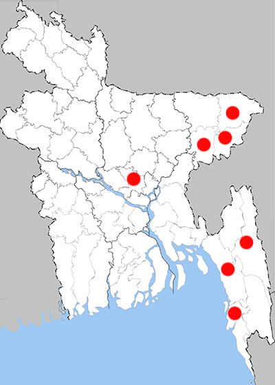

Graphium sarpedon sarpedon
Common Bluebottle

Recorded Place:
Rangamati, Chuadanga, Chattagram, Cox’s Bazar, Dhaka, Habiganj, Moulvibazar.

Literature Records:
Chowdhury, S.H. & M. Hossain (2025). PP: 307. Butterflies of Bangladesh-A Pictorial Handbook (Revised and enlarged version II). Dhaka, Bangladesh, 260pp.
Babu, M. Q., Mojumdar, A., Debbarma, P., Alom, K., & Ul Hasan, M. A. (2024). Unveiling the unknown: a butterfly checklist of the Adampur forest in Bangladesh. Journal of Bangladesh Academy of Sciences. 48(1), 85–97.